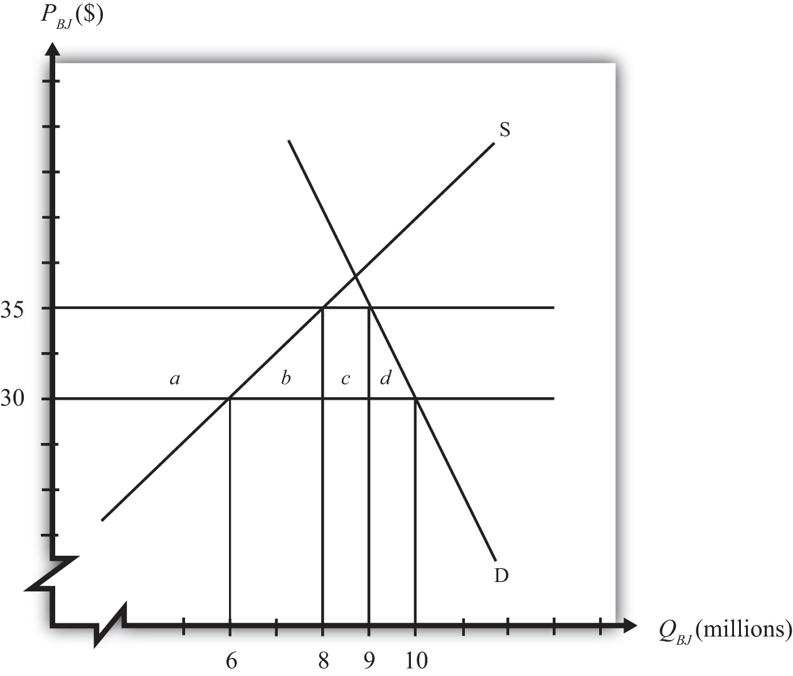

Trade policy analysis is often conducted from the implicit vantage point of a benevolent dictator poised to choose the best policies for a country. However, decisions about which policies to apply are rarely made by a sovereign but instead are usually made via a democratic political process. Whenever we consider how the political process affects economic decision making, we call it political economy.
The political economy aspects of trade policymaking are studied briefly in this chapter. Most important is how the concentrations and dispersion of the costs and benefits of trade policies tend to affect the decisions.
In most economic models, it is assumed that consumers maximize utility, firms maximize profit, and governments maximize national welfare. Although one can reasonably object to any one of these assumptions, perhaps the one least likely to hold is the assumption about a government’s behavior. Governments are rarely comprised of a solitary decision maker whose primary interest is the maximum well-being of the nation’s constituents. Such a person, if he or she existed, could be labeled a “benevolent dictator.” Although historically some nations have been ruled almost single-handedly by dictators, most dictators could hardly be called benevolent.
The assumption that governments behave as if they had a benevolent dictator may have developed out of the philosophical traditions of utilitarianism. Utilitarianism, whose roots date to writings by Jeremy Bentham in the early 1800s, suggests that the objective of society should be to produce the greatest good for the greatest number. The objective of individuals is to obtain utility (happiness, satisfaction, well-being, etc.). In economic analysis, we presume that individuals obtain all their utility from the consumption of goods and services, and this motivates the behavioral assumption that consumers maximize utility. The assumption that firms maximize profit is based on the same logic. Profit affects the income of firm owners. The greater one’s income, the greater will be one’s consumption possibilities and thus the higher will be one’s utility. Thus profit is merely a means to an end, the end being greater utility. It is not unreasonable, then, that if the objective of individuals and firms is maximum utility, then the objective of a government might be to maximize utility for everyone.
But even if governments do not seek to maximize national welfare, it is still a valid exercise to investigate which policies would lead to maximum utility. Indeed, most of the analysis of trade policies does just this. Policy analysis identifies the differential welfare effects of various policies and points out which of these will lead to the greatest overall utility or welfare.
If one prescribes policies that also maximize national welfare, then one is making the value judgment that maximum national welfare is the appropriate goal for a government. If one presumes that governments do indeed seek to maximize national welfare, then the task is to explain why the choices that governments make are explainable as the outcome of a national welfare maximization exercise. An alternative approach is to consider other reasons for the choices made by governments. This is essentially the task of political economy models.
Political economyA term used to describe the interaction between the economic system and the political system. is a term that reflects the interaction between the economic system and the political system. Many traditional models of the economy make simplifying assumptions about the behavior of governments. Keeping the model simple is one reason for the assumption of a benevolent dictator. Political economy models attempt to explain more carefully the decision-making process of governments. Today, most governments can be best described as representative democracies. This means that government officials are elected, through some voting procedure, to “represent” the interests of their constituents in making government decisions.
The key issue in political economy and trade models is to explain how political features in democratic economies affect the choice of a trade policy. Among the key questions are the following:
Jeopardy Questions. As in the popular television game show, you are given an answer to a question and you must respond with the question. For example, if the answer is “a tax on imports,” then the correct question is “What is a tariff?”
A government represents the interests of its citizens. As Abraham Lincoln said in the Gettysburg Address, a democratic government is meant to be by the people and for the people. Thus, in a representative democracyA political system where government officials are entrusted to take actions that are in the interests of their constituents. Periodic elections are the mechanism that makes it work., government officials are entrusted to take actions that are in the interests of their constituents. Periodic elections allow citizens to vote for individuals they believe will best fulfill their interests. If elected officials do not fulfill the interests of their constituents, then those constituents eventually have a chance to vote for someone else. Thus, if elected officials are perceived as good representatives of their constituents’ interests, they are likely to be reelected. If they follow their own individual agenda, and if that agenda does not match the general interests of their constituents, then they may lose a subsequent bid for reelection.
Citizens in democratic societies are traditionally granted the right to free speech. It is generally accepted that people should be allowed to voice their opinions about anything in front of others. In particular, people should be free to voice their opinions about government policies and actions without fear of reprisal. Criticisms of, as well as recommendations for, government policy actions must be allowed if a truly representative government is to operate effectively.
We can define lobbyingThe activity wherein individual citizens voice their opinions to government officials about government policy actions. as the activity wherein individual citizens voice their opinions to the government officials about government policy actions. It is essentially an information transmission process. By writing letters and speaking with officials, individuals inform the government about their preferences for various policy options under consideration. We can distinguish two types of lobbying: casual lobbying and professional lobbying.
Casual lobbying occurs when a person uses his leisure time to petition or inform government officials of his point of view. Examples of casual lobbying are when people express their opinions at a town meeting or when they write letters to their Congress members. In these cases, there is no opportunity cost for the economy in terms of lost output, although there is a cost to the individual because of the loss of leisure time. Casual lobbying, then, poses few economic costs except to the individual engaging in the activity.
Professional lobbying occurs when an individual or company is hired by someone to advocate a point of view before the government. An example is a law firm hired by the steel industry to help win an antidumping petition. In this case, the law firm will present arguments to government officials to try to affect a policy outcome. The law firm’s fee will come from the extra revenue expected by the steel industry if it wins the petition. Since, in this case, the law firm is paid to provide lobbying services, there is an opportunity cost represented by the output that could have been produced had the lawyers engaged in an alternative productive activity. When lawyers spend time lobbying, they can’t spend time writing software programs, designing buildings, building refrigerators, and so on. (This poses the question, What would lawyers do if they weren’t lawyering?) The lawyers’ actions with this type of lobbying are essentially redistributive in nature, since the lawyers’ incomes will derive from the losses that will accrue to others in the event that the lobbying effort is successful. If the lobbying effort is not successful, the lawyers will still be paid, only this time the losses will accrue to the firm that hired the lawyers. For this reason, lobbying is often called rent seekingA term used to describe the purposeful activity of seeking ways to shift profit or “rents” toward oneself or a favored group. because the fees paid to the lobbyists come from a pool of funds (rents) that arise when the lobbying activity is successful. Another name given to professional lobbying in the economics literature is a directly unproductive profit-seeking (DUP) activity Any activity whose primary purpose is to shift benefits toward a particular group, often by influencing policy decisions. Although a DUP activity may indirectly benefit a producer of final consumer goods or services, it does not directly contribute to that production..
Lobbying is necessary for the democratic system to work. Somehow information about preferences and desires must be transmitted from citizens to the government officials who make policy decisions. Since everyone is free to petition the government, lobbying is the way in which government officials can learn about the desires of their constituents. Those who care most about an issue will be more likely to voice their opinions. The extent of the lobbying efforts may also inform the government about the intensity of the preferences as well.
Jeopardy Questions. As in the popular television game show, you are given an answer to a question and you must respond with the question. For example, if the answer is “a tax on imports,” then the correct question is “What is a tariff?”
Consider the market for blue jeans in a small importing country, depicted in Figure 10.1 "A Market for Blue Jeans". Suppose a sudden increase in the world supply of jeans causes the world market price to fall from $35 to $30. The price decrease causes an increase in domestic demand from nine to ten million pairs of jeans, a decrease in domestic supply from eight to six million pairs, and an increase in imports from one to four million.
Figure 10.1 A Market for Blue Jeans
Because of these market changes, suppose that the import-competing industry uses its trade union to organize a petition to the government for temporary protection. Let’s imagine that the industry calls for a $5 tariff so as to reverse the effects of the import surge. Note that this type of action is allowable to World Trade Organization (WTO) member countries under the “escape clause” or “safeguards clause.”
We can use the measures of producer surplus and consumer surplus to calculate the effects of a $5 tariff. These effects are summarized in Table 10.1 "Welfare Effects of an Import Tariff". The dollar values are calculated from the respective areas on the graph in Figure 10.1 "A Market for Blue Jeans".
Table 10.1 Welfare Effects of an Import Tariff
| Area on Graph | $ Value | |
|---|---|---|
| Consumer Surplus | − (a + b + c + d) | − $47.5 million |
| Producer Surplus | + a | + $35 million |
| Govt. Revenue | + c | + $5 million |
| National Welfare | − (b + d) | − $7.5 million |
Notice that consumers lose more than the gains that accrue to the domestic producers and the government combined. This is why national welfare is shown to decrease by $7.5 million.
In order to assess the political ramifications of this potential policy, we will make some additional assumptions. In most markets, the number of individuals that makes up the demand side of the market is much larger than the number of firms that makes up the domestic import-competing industry. Suppose, then, that the consumers in this market are made up of millions of individual households, each of which purchases, at most, one pair of jeans. Suppose the domestic blue jeans industry is made up of thirty-five separate firms.
Suppose the supply and demand curves for bottles of Coke are given by,
S = 10P – 7 D = 13 – 5Pwhere P is the price of Coke per bottle, D is the quantity of Coke demand (in millions of bottles), and S is the quantity of Coke supply (in millions of bottles). Suppose the free trade price of Coke is $1.00 and that a tariff of $0.20 is being considered by the government. If the country is a small importer calculate the following:
If the $5 tariff is implemented, it will raise the price from $30 to $35. Consumption will fall from ten million to nine million pairs of jeans. Because of our simplifying assumption of one household per pair of jeans, one million households will decide not to purchase jeans because of the higher price. They will use the $35 to buy something else they think is more valuable than jeans. The other nine million households will pay the extra $5. This means that, at most, a household has to pay an extra $5 for the same pair of jeans. In terms of consumer surplus loss, nine million consumers lose $5 each for a total of $45 million (area a + b + c), while the remaining one million lose a total of $2.5 million (area d).
We can now ask whether a household would be willing to lobby the government to oppose the blue jeans tariff because of the extra cost they would incur. The likely answer is no. For most households, such a small price increase would hardly be noticed. Most consumers do not purchase blue jeans frequently. Also, blue jeans with different styles and brand names typically differ considerably in price. Consumers, who rarely keep track of events affecting particular markets, are unlikely to know that a tariff has even been implemented on the product considered or discussed.
If a person did know of an impending tariff, then presumably $5 is the maximum a household would be willing to pay toward a lobbying effort, since that is the most one can gain if a tariff is prevented. One might argue that if even a fraction of the $5 could be collected from some portion of the ten million consumer households, millions of dollars could be raised to contribute to an opposition lobbying effort. However, collecting small contributions from such a large group would be very difficult to do effectively.
Consider the problems one would face in spearheading a consumer lobbying effort to oppose the blue jeans tariff in this example. A seemingly reasonable plan would be to collect a small amount of money from each household hurt by the tariff and use those funds to pay for a professional lobbying campaign directed at the key decision makers. The first problem faced is how to identify which households are likely to be affected by the tariff. Perhaps many of these households purchased blue jeans last year, but many others may be new to the market in the upcoming year. Finding the right people to solicit money from would be a difficult task.
Even if you could identify them, you would have to find a way to persuade them that they ought to contribute. Time spent talking to each household has an opportunity cost to the household member since that person could be doing something else. Suppose that a person values her time at the hourly wage rate that she earns at her job. If she makes $20 per hour, then you’ll have less than fifteen minutes to convince her to contribute to the lobbying effort since fifteen minutes is worth the $5 you are trying to save for her. The point here is that even learning about the problem is costly for the household. For small savings, a lobbying group will have to convince its contributors very quickly.
Suppose we knew the names and addresses of the ten million affected households. Perhaps we could send a letter to each of them with a stamped return envelope asking to return it with a $2 or $3 contribution to the lobbying effort. With this plan, even purchasing the stamps to mail the envelopes would cost $3,400,000. One would need to get over half of the households to send in $3 each just to cover the cost of the mailing. Recipients of the letters will reasonably question the trustworthiness of the solicitation. Will the money really be put to good use? The chances of getting any more than a small return from this kind of solicitation is highly unlikely.
If contributions can be collected, the lobbying group will face another problem that arises with large groups: free ridership. Free ridingWhen someone enjoys the benefits of something without paying for it, especially when the product is a public good. occurs when someone enjoys the benefits of something without paying for it. The lobbying effort, if successful, will benefit all blue jeans consumers regardless of whether they contributed to the lobbying campaign. In economic terms, we say that the lobbying effort is a public good because individual households cannot be excluded from the benefits of successful lobbying. One of the key problems with public good provision is that individuals may be inclined to free ride—that is, to obtain the benefit without having contributed to its provision. Those who do not contribute also get the added benefit of the full $5 surplus if the lobbying campaign is successful.
The main point of this discussion, though, is that despite the fact that $47.5 million dollars will be lost to consumers of blue jeans if the $5 tariff is implemented, it is very unlikely that this group will be able to form a lobbying campaign to oppose the tariff. Since each household will lose $5 at most, it is extremely unlikely for any reasonable person to spend sufficient time to mount a successful lobbying campaign. Even if one person or group decided to spearhead the effort and collect contributions from others, the difficulties they would face would likely be insurmountable. In the end, government decision makers would probably hear very little in the way of opposition to a proposed tariff.
Many of the arguments are discussed in detail in Mancur Olson’s well-known book The Logic of Collective Action. One of the book’s key points is that large groups are much less effective than small groups in applying effective lobbying pressure on legislators.
Jeopardy Questions. As in the popular television game show, you are given an answer to a question and you must respond with the question. For example, if the answer is “a tax on imports,” then the correct question is “What is a tariff?”
On the producers’ side, let’s assume that there are thirty-five separate, and equally sized, firms. If a $5 tariff is implemented, producers as a group would gain $35 million in producer surplus. That means each firm stands to gain $1 million. Domestic producers would also supply two million additional pairs of jeans, and that would require expansion of the industry labor force. Clearly, the tariff would be beneficial to the firm owners and to industry workers. The potential to expand production, add workers, and increase profits by $1 million per firm will provide a strong motivation to participate in a lobbying effort. In the case of the firms, however, organization of a lobbying effort will be much easier than the opposing effort by consumers.
First of all, the $1 million surplus accruing to each firm is pure gravy. Payments to workers and other factors are not a part of the $1 million additional surplus; thus it is money over and above the marginal costs of additional production. For this reason, profit received in this manner is often referred to as “economic rents.” Since the rents are concentrated in a small number of firms, with $1 million going to each, each firm will have a strong incentive to participate in a lobbying campaign. But who’s going to spearhead the effort?
Organization of a lobbying campaign will probably be easier for firms than for consumers. First, the industry may have an industry association that maintains continual links with policymakers in state and federal governments. The workers in the industry might also belong to a trade union, which would also have interests in supporting a lobbying effort. Or a few of the industry leaders could take it upon themselves to begin the effort (although that is assumed away in the example). Second, as a smaller group, it is easy to identify the likely beneficiaries from the tariff and to solicit contributions. The lobbying group should easily be able to collect millions of dollars to support an extensive lobbying effort. A mere contribution of $50,000 per firm would generate $1.75 million that could be used to hire a professional lobbying team. Even if the chances of a successful outcome are small, it may still be practical for the firms to contribute to a lobbying effort. The return on that $50,000 “investment” would be $1 million if successful. That’s a 2,000 percent rate of return—much higher than any brick-and-mortar investment project that might be considered. Free riding would also be less likely to occur since with only thirty-five firms to keep track of, contributors would probably learn who is not participating. Nonparticipation would establish a poor reputation for a firm and could have unpleasant consequences in its future industry association dealings.
With a well-financed lobbying effort, it would not be difficult to make decision makers aware that there is resounding support for the tariff within the industry community. Newspaper and television ads could be purchased to raise public awareness. Interested parties could be flown to the capitol to speak with key decision makers. In this way, the chances of obtaining the tariff may be increased substantially.
The Mancur Olson result applies in reverse to small groups. Small groups are much more effective than large groups in applying effective lobbying pressure on legislators.
Jeopardy Questions. As in the popular television game show, you are given an answer to a question and you must respond with the question. For example, if the answer is “a tax on imports,” then the correct question is “What is a tariff?”
How the government decides whether to offer the $5 tariff, and who decides, will depend on the procedural rules of the democratic country in question. The tariff might be determined as a part of an administered procedure, such as a safeguards action or an antidumping action. Or the tariff may be determined as a part of a bill to be voted on by the legislature and approved, or not, by the executive. Rather than speaking about a particular type of government action, however, we shall consider the motivations of the government more generically.
The first thing the government may notice when being petitioned to consider raising the tariff is that government revenues will rise by $5 million. Relative to many government budgets, this is a small amount, and so it may have very little influence on policymakers’ decision. However, it will help reduce a budget deficit or add to the monies available for spending on government programs. Thus it could have a small influence.
In a democratic society, governments are called on to take actions that are in the interests of their constituents. If government officials, in this example, merely listen to their constituents, one thing should be obvious. The arguments of the industry seeking protection will surely resonate quite loudly, while the arguments of the consumers who should be opposed to the tariff will hardly even be heard. If a government official bases his or her decision solely on the “loudness” of the constituents’ voices, then clearly he or she would vote for the tariff. This is despite the fact that the overall cost of the tariff to consumers outweighs the benefits to the industry and the government combined.
Notice that the decision to favor the tariff need not be based on anything underhanded or illegal on the part of the industry lobbyists. Bribes need not be given to secure votes. Nor does the industry lobby need to provide false or misleading information. Indeed, the lobby group could provide flawlessly accurate information and still win the support of the officials. Here’s why.
It would be natural for the industry lobby group to emphasize a number of things. First, jobs would be saved (or created) as a result of the tariff. If a number can be attached, it will be. For example, suppose the industry supported 25,000 jobs in the initial equilibrium, when eight million pairs of jeans were produced by the domestic industry. That averages to 320 jeans produced per worker. Thus, when the industry cuts production by two million units, it amounts to 6,250 jobs. The lobby group could then frequently state the “fact” that the tariff will create 6,250 jobs. Second, the lobby would emphasize how the tariff would restore the vitality of the industry. If a surge of imports contributed to the problem, then the lobby would undoubtedly blame foreign firms for taking jobs away from hardworking domestic citizens. Finally, the lobby would emphasize the positive government budget effects as a result of the tariff revenue. All of this information clearly would be quite true.
If the lobby mentioned the higher prices that would result from the tariff, surely it would argue it is a small price to pay to save so many jobs. The lobby might even convince consumers of blue jeans that it is worth paying extra for jeans because it will save domestic jobs. After all, perhaps their own jobs will one day be in jeopardy due to imports. Plus, it is such a small price to pay: at only $5 extra, no one will even notice!
For a politician facing potential reelection, there is another reason to support the industry over the consumers, even with full information about the effects. Support of the industry will probably generate more future votes. Here’s why.
First, since industry members—management and workers—have a bigger stake in the outcome, they will be more likely to remember the politician’s support (or lack of support) on this issue at election time. Second, the politician can use his support for the industry in his political ads. Consider this political ad if he supports the industry: “I passed legislation that created over six thousand jobs!” Compare it with this truthful ad if he doesn’t support the industry: “By opposing protectionist legislation, I saved you five bucks on blue jeans!” Which one do you think sounds better?
Jeopardy Questions. As in the popular television game show, you are given an answer to a question and you must respond with the question. For example, if the answer is “a tax on imports,” then the correct question is “What is a tariff?”
There is a real problem with the lobbying process in democratic societies. Even though lobbying is a legitimate process of information transfer between constituents and government decision makers, it also produces some obvious disparities. Whenever policy actions generate concentrated benefits and dispersed costs, the incentives and abilities to lobby are significantly different across groups. Potential beneficiaries can often use the advantage of small group size and large potential windfalls to wield disproportionate influence on decision makers. Potential losers, whose numbers are large and whose expected costs per person are quite small, have almost no ability to lobby the government effectively. Thus, in a democratic society in which lobbying can influence decisions, decisions are likely to be biased in the favor of those policies that generate concentrated benefits and dispersed losses.
Unfortunately, and perhaps coincidentally, most policy actions taken produce concentrated benefits and dispersed losses. In the case of trade policies, most protectionist actions will cause concentrated benefits to accrue to firms, whereas losses will be dispersed among millions of consumers. This means that protectionist policies are more likely to win political support, especially when lobbying can directly affect legislated actions. Protectionism can easily occur even though the sum total effects of the policy may be negative.
In many countries, a protectionist tendency is reflected in the type of trade policy procedures that are available by law. Escape clause, antisubsidy, and antidumping policies are examples of laws designed to protect firms and industries in particular situations. In evaluating these types of petitions in the United States, there is no requirement that effects on consumers be considered in reaching a decision. Clearly, these laws are designed to protect the concentrated interests of producing firms. It would not be surprising, and indeed it seems likely, that the concentrated interests of businesses affected the ways in which the laws were originally written. The absence of a consumer lobby would also explain why consumer effects are never considered in these actions.
Suppose a small country implements a tariff on chicken imports. In the table below indicate whether each group is a winner or loser and whether the effects on that group are concentrated or dispersed.
Table 10.2 Political Economy Effects of a Tariff
| Name of Group | Winners or Losers | Concentrated or Dispersed |
|---|---|---|
| Chicken Producers | ||
| Chicken Consumers | ||
| Taxpayers or Recipients of Government Benefits |
Suppose a small country implements an export subsidy on soybeans. In the table below indicate whether each group is a winner or loser and whether the effects on that group are concentrated or dispersed.
Table 10.3 Political Economy Effects of an Export Subsidy
| Name of Group | Winners or Losers | Concentrated or Dispersed |
|---|---|---|
| Soybean Producers | ||
| Soybean Consumers | ||
| Taxpayers or Recipients of Government Benefits |